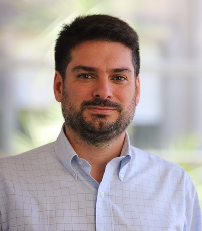
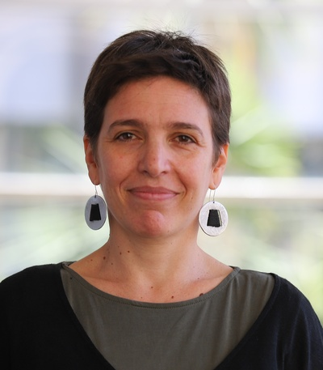

El observatorio funciona en base a los recursos docentes y de investigación de los Departamentos de Derecho y Ciencias Sociales de la Universidad Católica del Uruguay y a la colaboración con académicos de otras universidades de la región. El observatorio está integrado por:
EQUIPO
El observatorio funciona en base a los recursos docentes y de investigación de los Departamentos de Derecho y Ciencias Sociales de la UCU, y a la colaboración con académicos de otras universidades de la región. El observatorio está integrado por:
Diego Gamarra
Profesor Asociado del Departamento de Derecho de la UCU. Doctor en derecho por la Universidad por la Universidad Complutense de Madrid (España). Magíster en Derecho Parlamentario, Elecciones y Estudios Legislativos por la misma universidad. Director del Departamento de Derecho de la Universidad Católica del Uruguay. Especialista en Derecho Constitucional y Derechos Humanos, Investigador del Sistema Nacional de Investigadores de la ANII y Director suplente del Colegio de Abogados del Uruguay.
Rafael Piñeiro
Profesor Asociado y Director del Departamento en Ciencias Sociales de la UCU. Doctor en Ciencia Política por la Pontificia Universidad Católica de Chile y es profesor asociado del Departamento de Ciencias Sociales, Universidad Católica del Uruguay. Su trabajo de investigación se enfoca en transparencia, financiamiento de campañas, y partidos políticos. Ha publicado artículos en diversas revistas académicas como Comparative Political Studies, Party Politics,Government Information Quarterly, Latin American Politics and Society, Latin American Research Review, Journal of Democracy, Política y Gobierno y Revista de Ciencia Política, entre otras. Es coautor junto a Verónica Pérez Bentancur y Fernando Rosenblatt, del libro “How Party Activism Survives: Uruguay´s Frente Amplio,” publicado en 2020 por Cambridge University Press. Este libro ha recibido el Leon Epstein Outstanding Book Award de la sección de Organizaciones Políticas y Partidos de la American Political Science Association.
Cecilia Rossel
Profesora Asociada del Departamento de Ciencias Sociales de la UCU. Socióloga, y Doctora en Gobierno y Administración Pública, Instituto Universitario Ortega y Gasset – Universidad Complutense de Madrid. Su investigación está centrada en cómo los ciudadanos se relacionan con las políticas públicas. En particular, estudia los factores políticos que inciden en el desarrollo de ciertas políticas sociales. También ha estudiado el desarrollo de políticas de transparencia, financiamiento de campañas y acceso a la información pública. Ha publicado artículos en diversas revistas académicas como Government Information Quarterly, Latin American Research Review, Development Policy Review, Journal of Policy History, Feminist Economics y Journal of Transport geography.